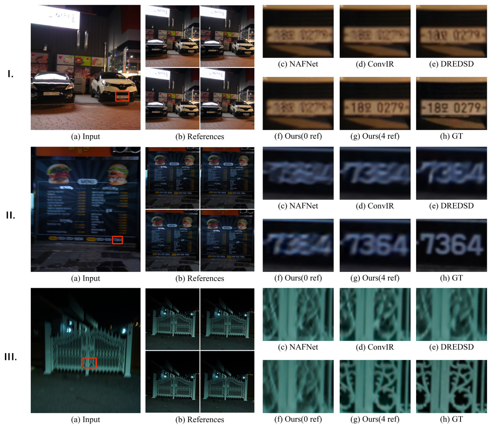
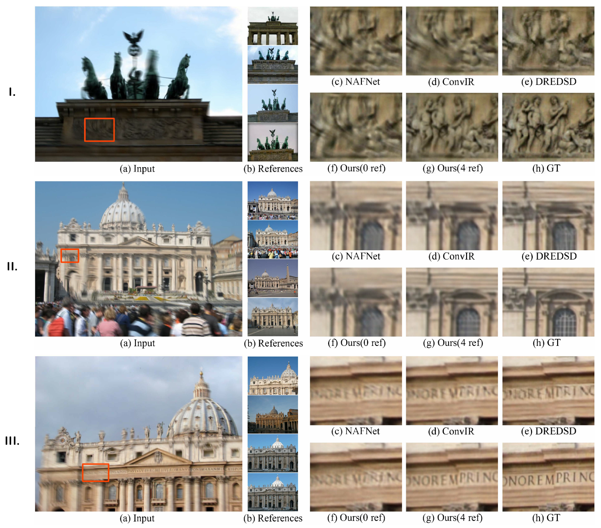
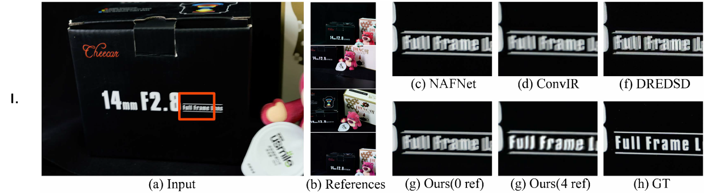
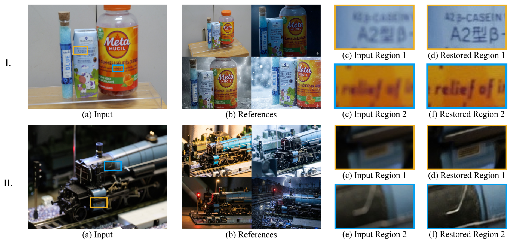
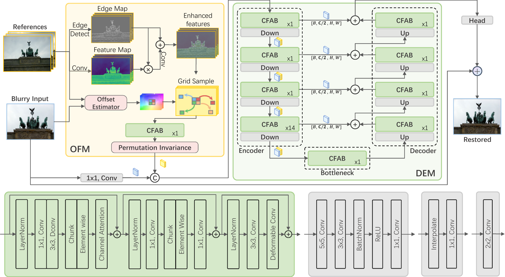

Input imageblurred capture
The input is deliberately blurred, so lettering, edges, and texture are only partially visible.
Motion blur is a persistent challenge in visual data processing. While single-image deblurring methods have made significant progress, using multiple reference images from the same scene for deblurring remains an overlooked problem. Existing methods struggle to integrate information from multiple reference images with differences in lighting, color, and perspective. Herein, we propose a novel framework MRFNet which leverages any number of discontinuous reference images for deblurring. The framework consists of two key components: (1) the Offset Fusion Module (OFM) guided by dense matching, which aggregates features from discontinuous reference images through high-frequency detail enhancement and permutation-invariant units; and (2) the Deformable Enrichment Module (DEM), which refines misaligned features using deformable convolutions for precise detail recovery. Quantitative and qualitative evaluations on synthetic and real-world datasets show that the proposed method outperforms state-of-the-art deblurring approaches. Additionally, a new real-world dataset is provided to fill the gap in evaluating discontinuous reference problems.
A browser-rendered explanatory simulation: one virtual scene, one blurry input, and five imperfect views that each carry a different piece of the missing detail.
Explanatory simulation
The input is deliberately blurred, so lettering, edges, and texture are only partially visible.
Select a reference below to reveal the region it can help recover.
How to read the simulation. Select references to reveal their complementary regions in the right-hand scene. The canvas drawings are an explanatory simulation, not a paper result or a reconstruction produced by MRFNet.
One real scene from the repository, shown as an aligned comparison. The blurry input stays visible on the left; drag the ruler or jump between zero references and four references.
Real repository result
Real paper result. Both sides use the same blurry frame. The four-reference restoration is on the left; moving right reveals the zero-reference result, where the signboard lettering remains soft.
Across every regime the paper tests — continuous real blur, synthetic sequences, discontinuous references, even defocus — the pattern repeats: where single-image methods over-smooth, fusing sharp references brings texture back.




The architecture from the paper (Fig. 3): match, fuse, then refine.

Fig. 3 — the MRFNet architecture. Each reference first passes a frozen dense matcher (RoMa) to produce per-pixel correspondences. The OFM enhances high-frequency detail of the aligned features and aggregates any number of references with permutation-invariant units — feeding order never changes the output. The DEM then runs an asymmetric encoder–decoder whose CFAB blocks (MBConv → FFN → deformable convolution) adapt their sampling locations to absorb residual misalignment, yielding the sharp image.
@article{guo2026mrfnet,
title = {MRFNet: Multi-reference fusion for image deblurring},
author = {Guo, Tingrui and Xu, Chi and Tang, Kaifeng and Qian, Hao},
journal = {Information Fusion},
volume = {131},
pages = {104169},
year = {2026},
doi = {10.1016/j.inffus.2026.104169}
}